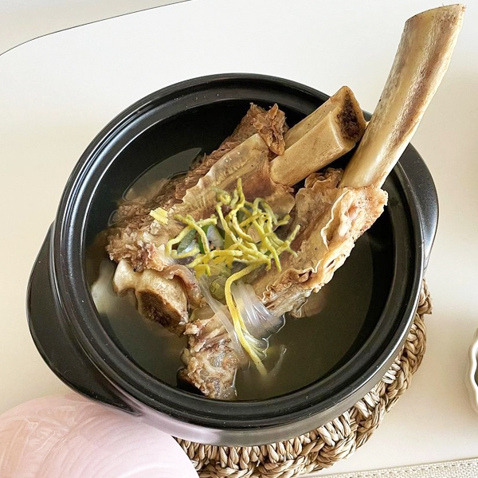

메뉴명: 갈비탕

메뉴 설명
: 소갈비를 푹 고아 깊은 맛이 나는 맑은 국물 요리입니다.
칼로리: 약 300~350kcal (1인분 기준)
나트륨: 약 800~1,000mg
재료
소갈비 500g, 무 1/4개, 대파 1대, 마늘 5쪽, 물 8컵, 소금, 후추 약간
레시피
1. 소갈비를 물에 담가 핏물을 뺍니다.
2. 갈비와 무, 대파, 마늘을 넣고 푹 끓입니다.
3. 간을 맞추고 대파를 올려 완성합니다.